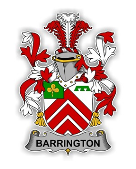
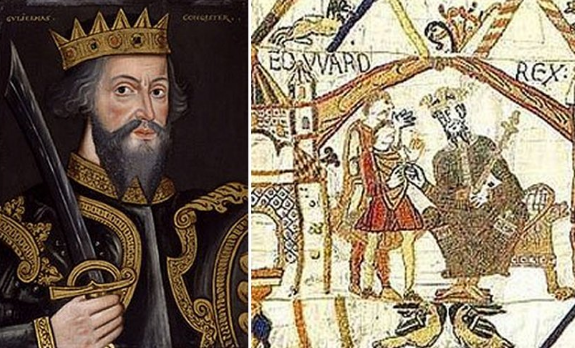
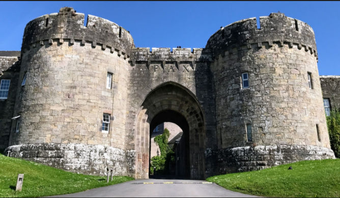
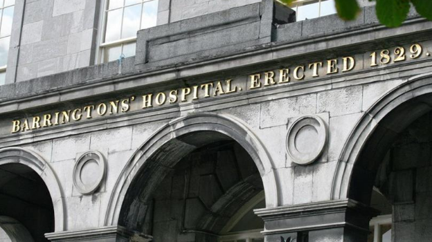

The Barrington family claims descent from Odo du Barentin, who came over from Normandy with William toe Conqueror. That explains how their motto is worded in Old French:Ung durant ma Vie - which sounds like a reminder of the troubadours. Barentin is still the name of a place in Normandy, between Rouen and Le Havre.
One of the oldest Renaissance castles in England is called BarringtonCourt, in Somerset. It was built by Lord Daubeny c. 1520 (James Lees-Milne Tudor Renaissance, Batsford, 1951). This Tudor mansion is now the property of the National Trust. Barrington is mentioned in the Papal Registers as a place-name in Somerset as far back as A.D. 1400.
The fifteenth in descent from Odo was Sir Francis Barrington, of Barrington Hall, Essex, who was created a baronet in 1611. This title became extinct on the death of the tenth baronet in 1833. Mr. Herbert de Hamel, of Southsea, Hants, has obligingly sent me a copy of his notes on the ancestry and lineage of his own great-great-grandfather, Sir Jonah Barrington, judge of the high court of admiralty in Ireland and M.P. for Tuam and Clogher.

Camden attributed the fortune of the early Barringtons to King Stephen. Le Neve, Norroy king-of-arms, mentioned a Saxon instead of a Norman as earliest known forbear: Barentone, custodian of Hatfield Forest, in the days of William the Conqueror. His son, Eustachius de Barentona, received grants of land from Henry I. The father of Sir Francis Barrington, first baronet, married firstly the daughter of Lord Morly, and secondly the youngest daughter of Henry Pole, Lord Montagu. She was a granddaughter of Blessed Margaret Pole, Countess of Salisbury, mother of Cardinal Pole who presided over the Council of Trent. Sir Francis was thus a descendant of the Duke of Clarence, brother of King Edward the Fourth. Sir Francis married Joan Cromwell; his brother John married Jane Ovington and was granted much land in the Queen's County by Elizabeth I (according to Burke's Extinct and Dormant Baronetcies of England, 1838, 2nd. edition; and The Plantagenet Roll of Blood Royal, Essex Volume, by the Marquis de Ruvigny).
The Barringtons settled in Limerick city at the end of the 17th century, Benjamin Barrington was sheriff in 1714. In the 1820s the Barringtons bought the Cappercullen estate from the Misses Preston, relatives of the Barons Carbery.Glenstal Abbey was built on this property.

Joseph Barrington was created a baronet in 1831. He founded Barrington's Hospital in the city. At the time of Griffith's Valuation his son, Sir Matthew Barrington, 2nd Baronet, owned 16 townlands in the parish of Abington, barony of Owneybeg, County Limerick, property in the Liberties and city of Limerick and in the parishes of Caheravally, Caherconlish, Cahernarry, Clonkeen and Donaghmore, barony of Clanwillliam and Uregare, barony of Coshma. Daughters of Sir Matthew Barrington married Henry Barry, a Dublin barrister, and the Right Honourable George Augustus C. May, Lord Chief Justice of Ireland.
In December 1856 the estate of Barry and May at Drumbanny, 1,398 acres in the barony of Clanwilliam, was advertised for sale. Sir Matthew Barrington was recorded as the immediate lessor of this property at the time of Griffith's Valuation. The fee simple estate of Barry and May at Little Kilrush in the Liberties of Limerick was advertised in April 1860. A lithograph of Limerick harbour is included in this rental.

Sir Croker Barrington, 4th Baronet of Glenstal, owned 9,485 acres in the 1870s. In June 1850 the rentals of the Shouldham estate, 2890 acres in the barony of Coonagh, county Limerick and the Annaghbeg estate, 1177 acres in the barony of Tulla, county Clare, held by Thomas Williams and Croker Barrington, were advertised for sale. The Barringtons and the Williams of Drumcondra Castle, county Dublin were related. The Annaghbeg estate, which was previously Goold property, was held under fee farm grant from Colonel George Wyndham and the Shouldham estate under a lease in perpetuity. Griffith's Valuation records Daniel Barrington, second son of the 1st Baronet, holding three townlands in the parish of Kiltenanlea, barony of Tulla Lower, county Clare (the Annaghbeg estate) and in the parish of Doon, barony of Coonagh, county Limerick. The Ordnance Survey Name Book for the parish of Doon records from whom Daniel Barrington purchased land in that parish.
Daniel Barrington was married to Anne Williams. Griffith's Valuation records the heirs of D. Barrington holding some land in the parish of Kilvellane, barony of Owney and Arrra, county Tipperary. In the 1870s Anne Barrington of Chester, England, owned 782 acres in that county. The Annaghbeg estate of George White West and William Jameson was advertised for sale again in June 1855. The petitioners were Sir Matthew Barrington and Thomas Williams.